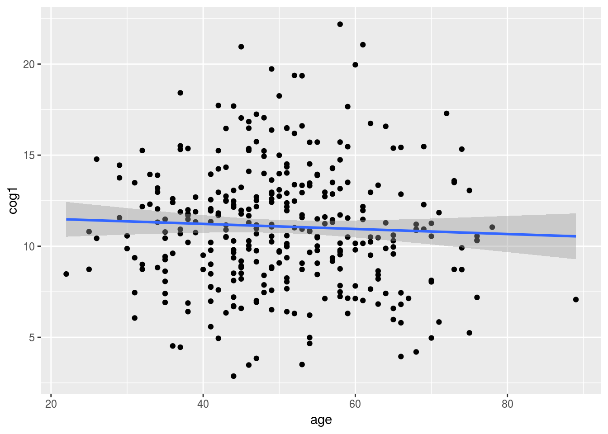
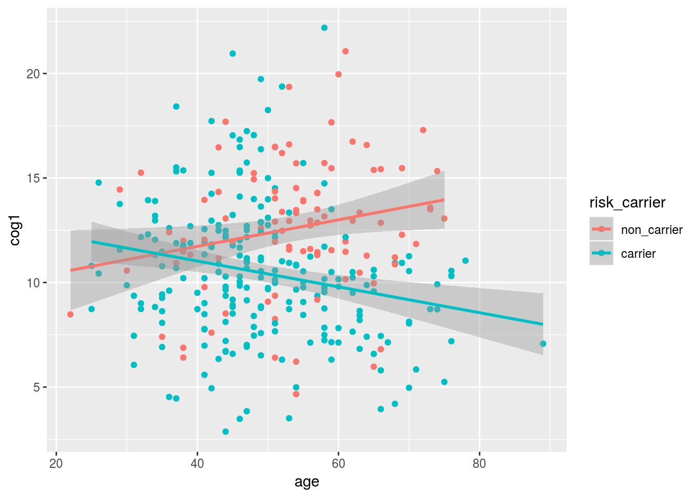
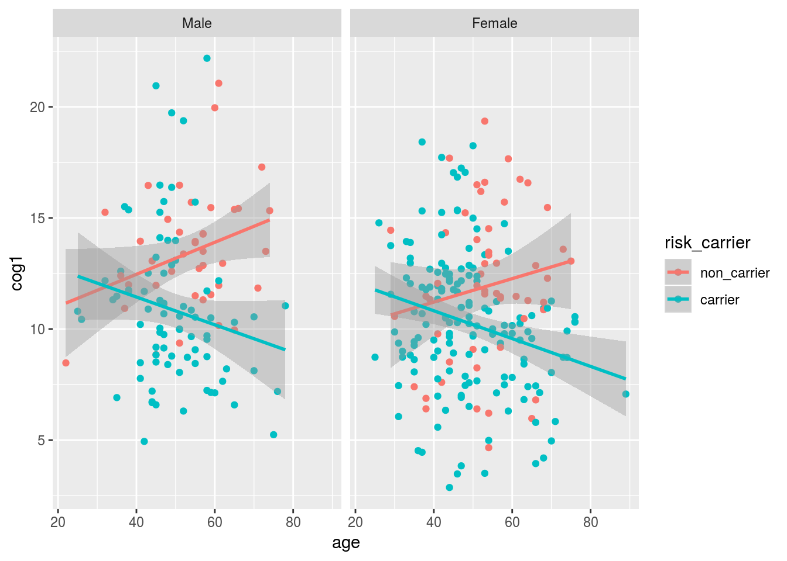
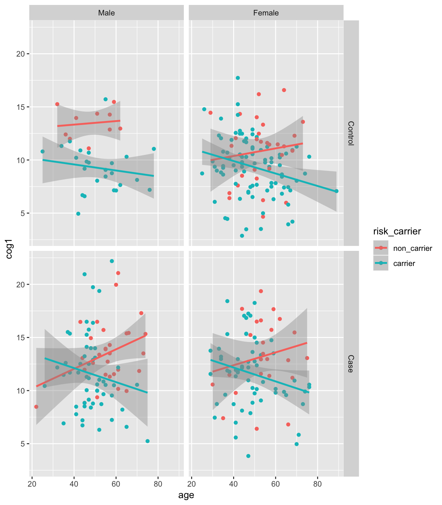
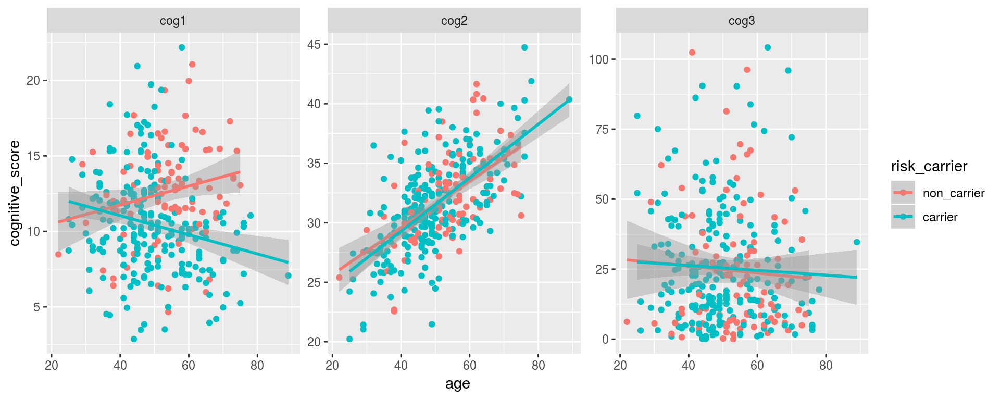

Chapter 3 Explore Data with R
3.1 Getting Started
We will be using these three datasets for the analysis today.. Please download the following files:
In this lesson, we are going to start building figures and table from our data.
We are going to do so inside an R - notebook, so we can write ourself a little tutorial/report as what we are finding as we go!!
To write a report, we will make use of R-Markdown syntax. A cheatsheet for R Markdown Syntax is here.
Add a new chunk by clicking the Insert Chunk button on the toolbar or by pressing Ctrl+Alt+I.
We are also going to make heavy use of the “tidyverse” suite of packages. These packages include:
- ggplot2: for plotting (ggplot cheat sheet)
- dplyr & tidyr: for manipulating dataframes (data Wrangling cheat sheet)
- knitr: for adding tables to our reports
For more info on programming with the tidyverse I highly recommend the online book R for data science by Garrett Grolemund & Hadley Wickham.
3.1.1 The packages for today
library(tidyverse)3.1.2 reading in the data
data1 <- read_csv("~/Desktop/messy_demographic.csv")
data2 <- read_csv("~/Desktop/messy_cognitive.csv")
data3 <- read_csv("~/Desktop/messy_genotype.csv")3.1.3 copy and paste the cleaning code
These are all the things we learned to do in Intro to R.
We are going to put them in one big chunk here.
library(stringr)
data1[data1==""] <- NA
data1[data1=="missing"] <- NA
data1[data1=="9999"] <- NA
data1 <- data1 %>%
mutate(age = as.numeric(age),
ethnicity = factor(ethnicity),
sex = factor(sex, levels = c(0,1),
labels = c("Male", "Female")),
dx = factor(dx, levels = c(0,1),
labels = c("Control", "Case")))
data2[data2==""] <- NA
data2[data2=="missing"] <- NA
data2[data2=="9999"] <- NA
data2 <- data2 %>%
mutate(cog1 = as.numeric(cog1),
cog2 = as.numeric(cog2),
cog3 = as.numeric(cog3),
subject_ID = str_replace(subID, "subject", "SUB_")) %>%
select(subject_ID, cog1:cog3)
data3[data3==""] <- NA
data3[data3=="missing"] <- NA
data3[data3=="9999"] <- NA
data3 <- data3 %>%
mutate(genotype = factor(genotype,
levels=c(0,1,2),
labels=c("AA","AG","GG")),
subject_ID = str_replace(subID, "subject", "SUB_")) %>%
select(-subID)
alldata <- data1 %>%
inner_join(data2, by="subject_ID") %>%
inner_join(data3, by="subject_ID")3.1.4 Let’s see what we have here
We can use the summary function (from base R) to get an idea of what is in our dataset.
summary will print some summary statistics for numeric variables are counts for our factors.
summary(alldata)## subject_ID age sex ethnicity dx
## Length:350 Min. :22.00 Male :130 AA : 70 Control:166
## Class :character 1st Qu.:43.00 Female:216 As : 42 Case :178
## Mode :character Median :49.00 NA's : 4 Cauc :196 NA's : 6
## Mean :50.38 In : 19
## 3rd Qu.:58.00 Other: 14
## Max. :89.00 NA's : 9
## NA's :8
## cog1 cog2 cog3 genotype
## Min. : 2.868 Min. :20.23 Min. : 0.05796 AA :103
## 1st Qu.: 8.783 1st Qu.:29.22 1st Qu.: 8.82092 AG :145
## Median :10.939 Median :31.36 Median : 19.79222 GG : 94
## Mean :11.087 Mean :31.66 Mean : 25.04099 NA's: 8
## 3rd Qu.:12.964 3rd Qu.:34.03 3rd Qu.: 35.55916
## Max. :22.189 Max. :44.74 Max. :104.21326
## NA's :5 NA's :5 NA's :93.2 Using tableone to make Table 1 of your paper
Table one is a cool package that creates the demogaphics table.
It takes four useful arguments + data: the data to plot + vars: the variables (from your data) to include in your table + factorVars: a list of which variables (in vars) should be treated as factors + strata: the name of a variable to split the table by.
library(tableone)
CreateTableOne(alldata,
vars = c("age", "sex",
"genotype","ethnicity",
"cog1", "cog2", "cog3"),
factorVars = c("sex",
"genotype","ethnicity"),
strata = "dx")## Stratified by dx
## Control Case p test
## n 166 178
## age (mean (sd)) 50.42 (11.95) 50.57 (11.06) 0.905
## sex = Female (%) 127 (77.4) 86 (48.9) <0.001
## genotype (%) 0.371
## AA 44 (27.2) 58 (33.1)
## AG 68 (42.0) 73 (41.7)
## GG 50 (30.9) 44 (25.1)
## ethnicity (%) 0.523
## AA 36 (22.4) 32 (18.4)
## As 17 (10.6) 25 (14.4)
## Cauc 92 (57.1) 100 (57.5)
## In 11 ( 6.8) 8 ( 4.6)
## Other 5 ( 3.1) 9 ( 5.2)
## cog1 (mean (sd)) 9.94 (2.91) 12.13 (3.44) <0.001
## cog2 (mean (sd)) 31.55 (3.88) 31.78 (3.79) 0.573
## cog3 (mean (sd)) 25.20 (21.76) 25.25 (20.39) 0.9823.3 Research Question 1 (two group comparison)
3.3.0.1 Is performance on Cognitive Scale One (cog1) associated with Diagnosis (Dx)
To test this statistically, we are going to run an independant samples t-test, using the base t.test function.
When we call the t.test function, we are going to use “formula” notation. we’re our dependant variable goes on the left side of a ~ and the predictors go to the right i.e. y ~ x.
t.test(cog1 ~ dx, data = alldata)##
## Welch Two Sample t-test
##
## data: cog1 by dx
## t = -6.347, df = 334.92, p-value = 7.133e-10
## alternative hypothesis: true difference in means is not equal to 0
## 95 percent confidence interval:
## -2.871388 -1.512676
## sample estimates:
## mean in group Control mean in group Case
## 9.940047 12.132079One cool thing to remember about everything you do in R is that they generate useful objects we can save.
my_ttest_result <- t.test(cog1 ~ dx, data = alldata)
my_ttest_result$p.value## [1] 7.13299e-103.3.1 Plotting our result
library(ggplot2)
ggplot(data = alldata, aes(x = dx, y = cog1)) +
geom_boxplot() #### removing NA rows before plotting
#### removing NA rows before plotting
We can use tidyr’s drop_na to remove rows with NA’s in the dx column
alldata %>%
drop_na(dx) %>%
ggplot(aes(x = dx, y = cog1, fill = dx)) +
geom_boxplot() 
3.3.1.1 Introducing the the dotplot geom
geom_dotplot has to be one of my favs.. Let’s use it in combination with geom_boxplot.
Let’s also use the labs() call to relabel our axes with more descriptive titles.
Note: by setting labs(x = NULL) we are removing the word “dx” from the bottom of the plot
alldata %>%
drop_na(dx) %>%
ggplot(aes(x = dx, y = cog1, fill = dx)) +
geom_dotplot(binaxis = "y", stackdir = "center") +
geom_boxplot(alpha = 0.5) + # using "alpha" to make the box-plot semi-transparent
labs(x = NULL, #remove dx from the bottom
y = "Cognitive Score 1", #add more desciptive title to y-axis
fill = "Diagnosis") # change dx to Diagnosis in the legend
3.4 pretty tables with dplyr
In the section below we use two powerful tools from dplyr:
summarise: will calculate summary statistics, we are going to ask for three stats here:- n_age: the number of valid (i.e. not NA) values for age
- mean_age: the mean for age (after removing NA values using the na.rm argument)
- sd_age: the standard deviation for age after removing the NA values
group_by: will split the data by the “grouping” variable(s) you input- in this case we are asking for separate summary statistics for each diagnostic group, for each genotype
After calculating our summary table we are going to call kable, a function in the knitr package. That make the table appear nicer in our “knitted” report.
Note: kable has some kewl optional arguments you can use to format you table further, such as col.names, digits, and align. Check out ?kable for more info..
table_2 <- alldata %>%
drop_na(dx) %>%
group_by(dx,genotype) %>%
summarise(n_age = sum(!is.na(age)), #the total number of observations that are NOT NA
mean_age = mean(age, na.rm = T),
sd_age = sd(age, na.rm = T))
library(knitr)
kable(table_2)| dx | genotype | n_age | mean_age | sd_age |
|---|---|---|---|---|
| Control | AA | 43 | 52.00000 | 10.574002 |
| Control | AG | 66 | 49.92424 | 11.024882 |
| Control | GG | 50 | 49.94000 | 14.217566 |
| Control | NA | 4 | 47.50000 | 12.476645 |
| Case | AA | 57 | 55.08772 | 10.554756 |
| Case | AG | 71 | 48.61972 | 10.355628 |
| Case | GG | 43 | 48.37209 | 11.176129 |
| Case | NA | 2 | 38.00000 | 9.899495 |
3.5 use forcats to label risk_carriers
When working with a genotype of interest, it’s very common group participants into “carriers” and “non-carriers” of a risk-allele. In this dataset, our risk allele is the “G” genotype. We will create a new “risk_carrier” variable by combining levels of the genotype variable.
Working with factors in R can be…annoying. Especially when we want to create new factors out of old factors. For this reason, the tidyverse includes a forcats package. That includes many function (all starting with fct_) for doing stuff to factors. We will use fct_collapse to combine the “GG” and “AG” genotype factors into a new “carrier” level in a new factor.
library(forcats)
alldata <- alldata %>%
mutate(risk_carrier = fct_collapse(genotype,
carrier = c("GG", "AG"),
non_carrier = "AA"))3.6 Make a simple scatter plot
Let’s use geom_point() and geom_smooth, together to create a scatter plot with a trendline.
Note: to make the trendline straight, we use “method = lm” when calling geom_smooth().
alldata %>%
ggplot(aes(x = age, y = cog1)) +
geom_point() +
geom_smooth(method = "lm") 
3.7 Use plotting to show the age by risk carrier interaction
When we add a new mapping of color = risk_carrier to the top line of our plot this mapping applies to both the points and the trendline.
Note: we are using drop_na to remove the NA as a category so that it does not occur as a third color in our plot.
alldata %>%
drop_na(risk_carrier) %>%
ggplot(aes(x = age, y = cog1, color = risk_carrier)) +
geom_point() +
geom_smooth(method = "lm") 
We can use faceting to add and extra dimension - separate plots for male and female subjects.
alldata %>%
drop_na(risk_carrier,sex) %>%
ggplot(aes(x = age, y = cog1, color = risk_carrier)) +
geom_point() +
geom_smooth(method = "lm") +
facet_wrap(~sex)
facet_grid will allow us to facet by TWO variables. In this case sex and dx.
alldata %>%
dplyr::filter(!is.na(risk_carrier), !is.na(sex), !is.na(dx)) %>%
ggplot(aes(x = age, y = cog1, color = risk_carrier)) +
geom_point() +
geom_smooth(method = "lm") +
facet_grid(dx~sex)
3.8 BONUS section - gather cognitive scores into one plot
One things we want to do sometimes is to stack data from multiple columns in one column. The reason why this is useful, will hopefully become apparent in the next example.
This “stacking” task (also refered to as “melting”) is accomplished using gather from the tidyr package. gather creates two new columns from your data: “key” and “value”. + key: a new column that will hold the old variable names from the gathered data + value: a new column that will hold the data values
After the key and value arguments. We can tell gather what colums we want to stack using the same syntax used by dplyr’s select(). In this example, we tell it we want to gather our three cognitive scales using starts_with().
library(tidyr)
alldata %>%
gather(cog_scale, cognitive_score, starts_with("cog"))## # A tibble: 1,050 x 9
## subject_ID age sex ethnicity dx genotype risk_carrier cog_scale
## <chr> <dbl> <fct> <fct> <fct> <fct> <fct> <chr>
## 1 SUB_1 43.0 Male Cauc Cont… GG carrier cog1
## 2 SUB_2 47.0 Female Cauc Case AG carrier cog1
## 3 SUB_3 69.0 Female Cauc Case AA non_carrier cog1
## 4 SUB_4 51.0 Male Cauc Case GG carrier cog1
## 5 SUB_5 52.0 Female Cauc Cont… AA non_carrier cog1
## 6 SUB_6 71.0 Male AA Case AA non_carrier cog1
## 7 SUB_7 56.0 Female Cauc Case AA non_carrier cog1
## 8 SUB_8 35.0 Female <NA> Cont… GG carrier cog1
## 9 SUB_9 42.0 Female Cauc Cont… AG carrier cog1
## 10 SUB_10 45.0 Female Other Case <NA> <NA> cog1
## # ... with 1,040 more rows, and 1 more variable: cognitive_score <dbl>The beauty of gather is that it can be combined with other the rest of the tidyverse using the pipe. Let’s feed out gathered result to ggplot.
Note: using scales = "free" when faceting will force ggplot to draw a separate axis for each subplot (by default, scales = "fixed", meaning that the same axes are drawn for each plot).
alldata %>%
gather(cog_scale, cognitive_score, starts_with("cog")) %>%
drop_na(risk_carrier, dx) %>%
ggplot(aes(x = age, y = cognitive_score, color = risk_carrier)) +
geom_point() +
geom_smooth(method = "lm") +
facet_wrap(~cog_scale, scales = "free") 